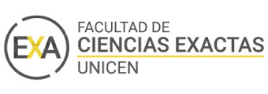
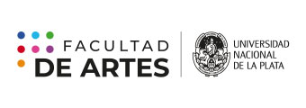

<article class="_container_all">
  <section class="_container">
    <div class="_container_title">
      <hr class="_line_title"><h1 class="_title">biografía</h1><hr class="_line_title">
    </div>
    <div class="_container_cards">
      <section class="_container_item" (click)="showMoreAcademic()">
        <h2 class="_item" >
          Académica
        </h2>
      </section>
      <section class="_container_info" [hidden]="!visibleAcademic">
        <div class="_container_career">
          <h3 class="_year">TUDAI</h3>
          <p class="_info"><span>2017 | 2022</span></p>
          <p class="_info">Tecnicatura Universitaria en Deasarrollo de Aplicaciones Informáticas</p>
          <div class="_container_logo">
            
              <section class="_container_links">
                <a class="_link" href="https://exa.unicen.edu.ar/tudai/" target="_blank">
                  <mat-icon>link</mat-icon>institución
                </a>
                <!-- <a class="_link" href="https://exa.unicen.edu.ar/tudai/" target="_blank">
                  <mat-icon>link</mat-icon>título
                </a> -->
              </section>
          </div>
        </div>
        <div class="_container_career">
          <h3 class="_year">UXDI</h3>
          <p class="_info"><span>2018</span></p>
          <p class="_info">Diplomatura Universitaria en Experiencias de Usuario y Diseño Inclusivo</p>
          <div class="_container_logo">
            
              <section class="_container_links">
                <a class="_link" href="https://uxdi.exa.unicen.edu.ar/" target="_blank">
                  <mat-icon>link</mat-icon>institución
                </a>
              </section>
          </div>
        </div>
        <div class="_container_career">
          <h3 class="_year">Formación Pedagógica</h3>
          <p class="_info"><span>2015 | 2016</span></p>
          <p class="_info">Tramo de Formación Pedagógica para Profesionales</p>
          <div class="_container_logo">
            
              <section class="_container_links">
                <a class="_link" href="https://www.vocaciondocente.com/" target="_blank">
                  <mat-icon>link</mat-icon>institución
                </a>
                <!-- <a class="_link" href="https://exa.unicen.edu.ar/tudai/" target="_blank">
                  <mat-icon>link</mat-icon>título
                </a> -->
              </section>
            </div>
          </div>
          <div class="_container_career_end">
            <h3 class="_year">Lic. DCV</h3>
            <p class="_info"><span>1998 | 2007</span></p>
            <p class="_info">Lic. en Diseño en Comunicación Visual</p>
            <div class="_container_logo">
              
              <section class="_container_links">
                <a class="_link" href="http://www2.fba.unlp.edu.ar/dcv/carrera/plan-de-estudios/" target="_blank">
                  <mat-icon>link</mat-icon>institución
                </a>
                <!-- <a class="_link" href="https://exa.unicen.edu.ar/tudai/" target="_blank">
                  <mat-icon>link</mat-icon>título
                </a> -->
              </section>
          </div>
        </div>
        

<!--        
        <section class="_container_links">
          <p class="_link"><span class="_litte_title">Links de interés</span></p>
          <div class="_link">
            <a class="_link" href="https://exa.unicen.edu.ar/tudai/" target="_blank">TUDAI</a>
            <a class="_link" href="https://uxdi.exa.unicen.edu.ar/" target="_blank">UXDI</a>
            <a class="_link" href="http://www2.fba.unlp.edu.ar/dcv/carrera/plan-de-estudios/" target="_blank">DCV</a>
            <a class="_link" href="https://www.vocaciondocente.com/" target="_blank">DCV</a>
          </div>
        </section> -->
        <div class="_container_btn">
          <button class="_btn_close" (click)="showMoreAcademic()">
            <mat-icon>keyboard_arrow_up</mat-icon>
            CERRAR
          </button>
        </div>
      </section>
      <section class="_container_item" (click)="showMoreLabor()">
        <h2 class="_item" >
          Laboral
        </h2>
      </section>
      <div class="_container_info" [hidden]="!visibleLabor">
        <p class="_info"><span>2022 - en curso</span></p>
        <p class="_info"><span>Ssr. UX | UI</span></p>
        <p class="_info">Se llama <span>experiencia de usuario,</span> por su enfoque, a la <span>relación sistema humano|máquina,</span> 
          y aparece como una evolución de la ergonomía, manteniendo al diseño en el papel protagónico
          para la <span>búsqueda de satisfacción en las personas que interactúan con un sistema, producto o entorno.</span></p>
        <p class="_info"><span>UI</span> - El <span>diseño de interfaz de usuario</span> 
          es el resultado de definir la <span>forma, función, utilidad, ergonomía, imagen de marca</span>
          y otros aspectos que afectan a la apariencia externa de las interfaces en sistemas de todo tipo.
        </p>
      </div>
      <section class="_container_item_disabled">
        <h2 class="_item_disabled">
          Personal
        </h2>
      </section>
      <p class="_item_disabled">en construcción</p>
      <!-- <button routerLink="academic">
        Académica
      </button>
      <button routerLink="labor">
        Laboral
      </button>
      <button routerLink="personal">
        Personal
      </button> -->
    </div>
  </section>
</article>
